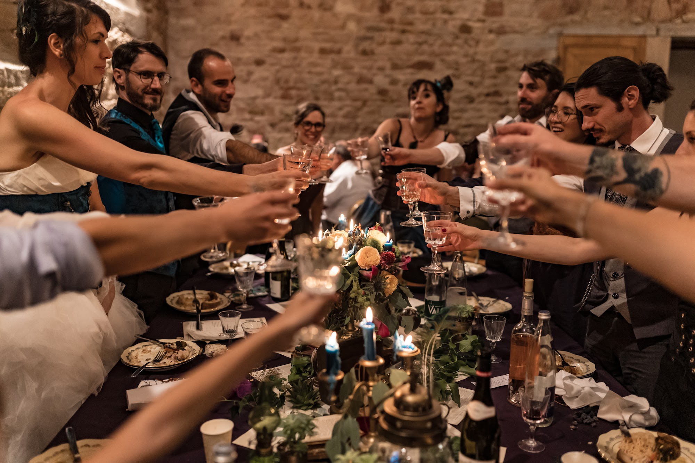
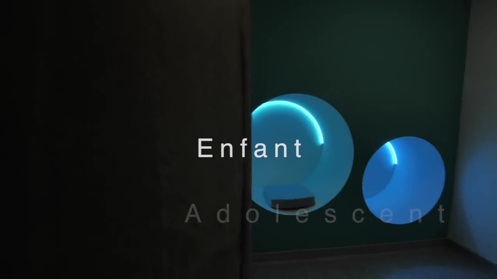
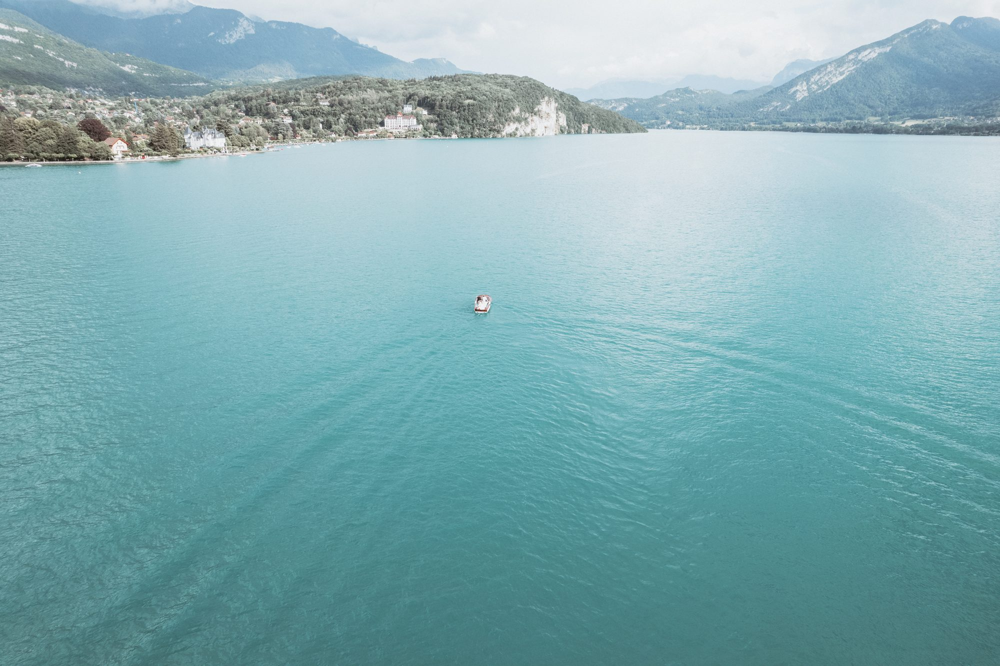
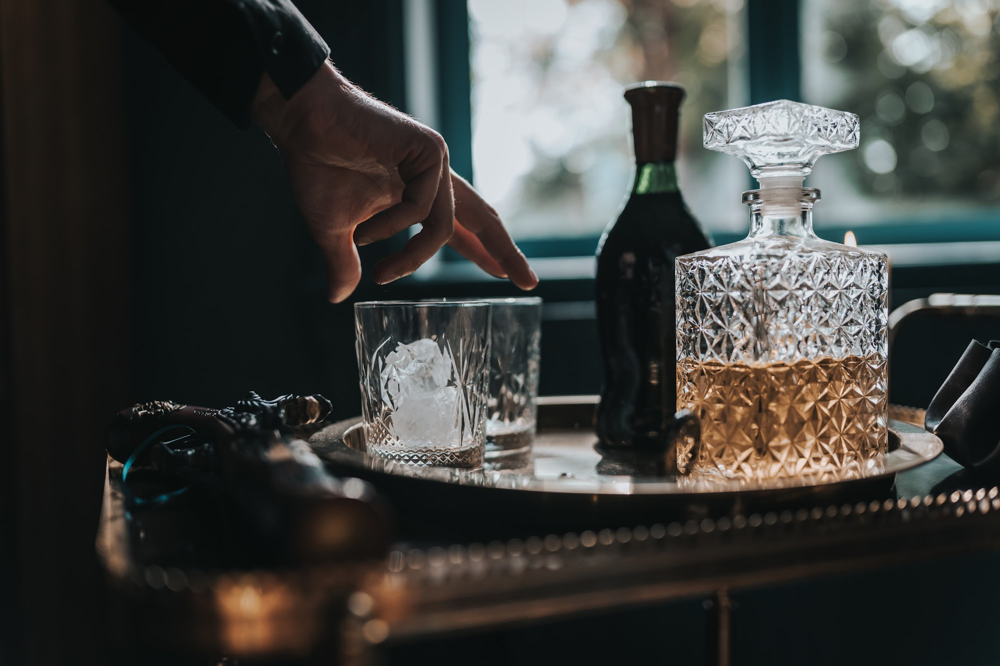
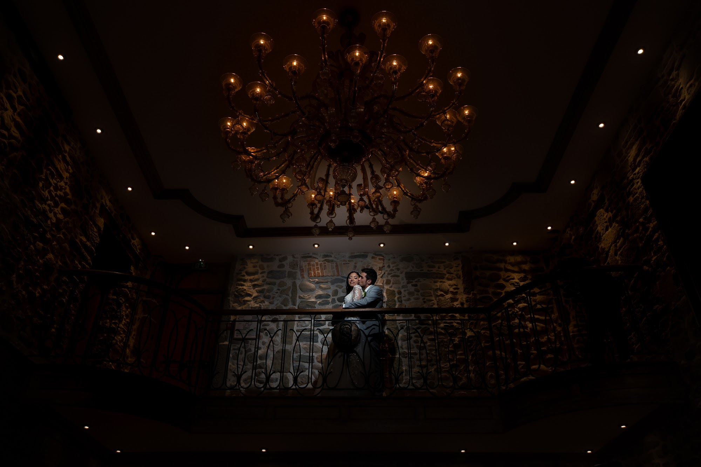

Réussir l'aftermovie de votre événement : la vidéo de séminaire à Lyon
Réaliser une vidéo de séminaire à Lyon demande bien plus que de simplement poser une caméra au fond d'une salle de conférence. Je conçois le film d'événement d'entreprise comme un reportage humain, centré sur les regards, les poignées de main et l'énergie de votre équipe. Voici ma méthode pour créer un aftermovie qui reflète l'âme de votre projet et l'atmosphère de votre journée.

L'humain au centre du film d'événement d'entreprise
Les vidéos d'entreprise traditionnelles ont longtemps souffert d'une image figée, faite de poignées de main artificielles et de sourires forcés face à l'objectif. Mon approche est diamétralement opposée. Je crois que la force d'un groupe réside dans ses interactions spontanées. Ce sont ces moments de vie réels que je cherche à documenter tout au long de la journée.
Pendant un atelier de travail, je m'attarde sur un regard concentré, sur une main qui esquisse un croquis ou sur un éclat de rire partagé entre deux collègues. Lors du repas ou du cocktail, je saisis les conversations animées en arrière-plan. Ces détails construisent une narration sincère.
Votre aftermovie événement doit ressembler à votre équipe. En laissant les participants agir naturellement, sans jamais leur demander de rejouer une scène, j'obtiens des images organiques. Le résultat est un film qui transmet une émotion vraie et qui donne envie à vos collaborateurs de revivre ce moment de cohésion.
La discrétion du vidéaste événementiel
Pour capter ces instants authentiques, la présence de la caméra doit se faire oublier. J'aborde la réalisation d'une vidéo de séminaire à Lyon avec la même discrétion que lors d'un reportage documentaire. Je me fonds parmi vos invités, naviguant silencieusement entre les tables et les groupes de discussion.
Mon équipement est pensé pour être léger et mobile. Je n'installe pas de lourds projecteurs éblouissants qui intimideraient vos collaborateurs. En travaillant avec des focales adaptées, je peux filmer des portraits serrés et des échanges complices depuis l'autre bout de la pièce, laissant l'action se dérouler sans aucune interférence de ma part.

Valoriser le cadre de votre séminaire en région
Le lieu que vous avez choisi pour réunir vos équipes joue un rôle fondamental dans l'ambiance de votre événement. Il mérite une place de choix dans votre aftermovie. Qu'il s'agisse d'un loft industriel au cœur du Rhône, d'un domaine aux pierres dorées dans le Beaujolais ou d'un chalet face aux montagnes de Savoie ou de Haute-Savoie, je prends le temps de filmer l'environnement.
Ces plans d'établissement, souvent réalisés en début de journée ou à la tombée de la nuit, permettent de situer l'action. Ils donnent de l'ampleur au film d'événement d'entreprise et rappellent le soin que vous avez apporté à l'organisation. L'architecture, la nature environnante, la décoration des espaces de réunion font partie intégrante de l'histoire visuelle.

Le son, l'élément invisible d'une vidéo percutante
L'image attire le regard, mais c'est le son qui retient l'attention. Un aftermovie événementiel muet, simplement posé sur une musique de fond, manque souvent de relief. C'est pourquoi j'attache une grande importance à la prise de son lors de vos rassemblements.
J'enregistre le brouhaha joyeux d'un cocktail, les applaudissements après une présentation, et surtout, des fragments de discours. Placer la voix de votre directeur ou d'un intervenant inspirant en voix off sur les images donne une dimension très forte à la vidéo. Cela apporte du contexte et du sens aux visuels, transformant un simple montage en un message fédérateur pour votre entreprise.
Une esthétique éditoriale grâce à la lumière naturelle
Mon style visuel repose en grande partie sur l'utilisation de la lumière naturelle. Même dans un contexte professionnel, je recherche une esthétique élégante et cinématographique, loin des néons froids souvent associés au monde du travail. Je joue avec les ombres, les reflets dans les vitres et la chaleur d'une fin d'après-midi.
Lors des soirées de gala ou des dîners d'équipe, j'utilise la lumière ambiante, les bougies ou les éclairages du lieu pour conserver l'atmosphère feutrée et chaleureuse. Cette approche donne à votre vidéo de séminaire à Lyon une patine visuelle très qualitative, proche d'un film documentaire d'auteur.

Le montage : donner le rythme à votre aftermovie événement
Tout le travail de captation prend son sens lors de la phase de montage. C'est ici que l'histoire s'écrit. Je sélectionne minutieusement les meilleures séquences pour créer une dynamique qui retient l'attention du début à la fin. Le choix de la musique est une étape cruciale : elle doit correspondre à l'identité de votre marque et à l'énergie de la journée.
Je construis le rythme en alternant des plans calmes et contemplatifs avec des séquences plus nerveuses et rythmées, particulièrement lors des activités de team building. Les transitions s'alignent sur la musique et les respirations sonores, créant un ensemble fluide et cohérent qui met en valeur l'engagement de vos collaborateurs.
Préparer ensemble votre tournage
La réussite d'un film d'événement d'entreprise repose sur une bonne préparation. Avant le jour J, nous discutons en détail de votre planning. J'ai besoin de connaître les moments charnières : l'heure du discours d'ouverture, le déroulement de l'activité de l'après-midi, le moment précis de la remise de prix.
Cette organisation millimétrée me permet ensuite d'être totalement libre et réactif sur place. En sachant exactement où et quand se déroulent les temps forts, je peux me concentrer pleinement sur mon cadre, sur la lumière et sur les émotions, pour vous livrer un aftermovie qui marquera les esprits de vos équipes.

Questions fréquentes
Quelle est la durée idéale pour un aftermovie de séminaire ?
Je recommande généralement un format court et dynamique, entre 1 et 3 minutes. C'est la durée parfaite pour maintenir l'attention de vos collaborateurs lors d'une diffusion en interne ou pour une utilisation sur les réseaux sociaux professionnels.
Filmez-vous l'intégralité des conférences et des discours ?
Pour l'aftermovie, je capte des extraits marquants afin de dynamiser le montage. Si vous avez besoin de conserver l'intégralité d'une conférence pour vos archives ou des formations, nous pouvons prévoir un dispositif d'enregistrement en continu spécifique à cet usage.
Quel est le délai pour recevoir la vidéo de notre événement ?
Le travail de dérushage, de montage, de mixage sonore et d'étalonnage demande du temps. Je livre habituellement le film finalisé sous quelques semaines, en vous tenant informés de l'avancée de la post-production.
Vous déplacez-vous en dehors du Rhône pour filmer ?
Oui, je me déplace régulièrement pour accompagner mes clients. Que votre événement ait lieu dans la Drôme, en Ardèche, en Isère, dans les Alpes ou même à l'étranger, je vous suis là où votre projet vous mène.
Vous souhaitez mettre en images l'énergie de votre prochain rassemblement d'équipe ? Discutons ensemble de la réalisation de votre aftermovie.
Parlons de votre projet